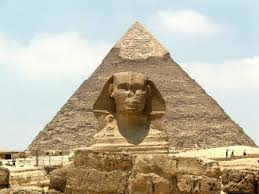

INSTITUTO TECNOLÓGICO DE TIJUANA
UNIDAD TOMAS AQUINO
Tijuana, B.C a 10 de septiembre de 2025
Carrera: ISC
Materia: Programación Web
Horario: 19-20 hrs
Laboratorio: D
Matrícula: 23211004
Alumno: Erick Corrales
Docente: José Jonathan Pérez Castro
Destrucción y conservación de las maravillas antiguas
De las siete maravillas del mundo antiguo, solo la Gran Pirámide de Giza sigue en pie. El resto fueron destruidas por causas naturales, guerras o el paso del tiempo. Muchas de ellas no dejaron más que restos arqueológicos o referencias en textos antiguos.
El Templo de Artemisa en Éfeso fue destruido varias veces, la más famosa por un incendio provocado en el 356 a.C. El Mausoleo de Halicarnaso, aunque resistió siglos, fue desmantelado en la Edad Media y sus restos usados para construir fortalezas.
La naturaleza también jugó un papel clave en la destrucción. El Coloso de Rodas cayó en el año 226 a.C. debido a un terremoto. El Faro de Alejandría, una de las construcciones más altas del mundo antiguo, se derrumbó progresivamente por una serie de sismos entre los siglos X y XIV.
Los Jardines Colgantes de Babilonia son el mayor enigma. Algunos historiadores creen que nunca existieron en Babilonia, sino en otra ciudad, y que su imagen se fue construyendo a partir de relatos exagerados. Su “destrucción” es más bien una desaparición en la historia.
La Gran Pirámide de Giza sobrevivió gracias a su solidez arquitectónica y a las condiciones climáticas del desierto. Aunque perdió parte de su recubrimiento de piedra caliza, sigue siendo un símbolo de resistencia del ingenio humano frente al paso del tiempo.